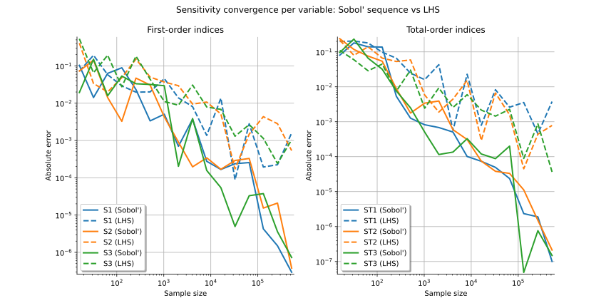

Note
Go to the end to download the full example code.
Sobol’ sensitivity indices using a low-discrepancy sequence¶
In this example, we estimate Sobol’ sensitivity indices for the Ishigami function using quasi-Monte Carlo sampling with a low-discrepancy sequence (Sobol’ sequence).
We compare its estimation accuracy and convergence rate to those obtained with a standard Latin Hypercube Sampling (LHS) design of experiments.
Model definition and analytical indices¶
We load the Ishigami model from the usecases module.
import openturns as ot
import openturns.viewer as otv
from openturns.usecases import ishigami_function
im = ishigami_function.IshigamiModel()
distribution = im.distribution
model = im.model
dim = distribution.getDimension()
The exact first-order (![S_i]() ) and total-order (
) and total-order (![ST_i]() ) Sobol’ indices
are available from the use case:
) Sobol’ indices
are available from the use case:
Exact first-order indices: S1=0.3139, S2=0.4424, S3=0.0000
Exact total-order indices: ST1=0.5576, ST2=0.4424, ST3=0.2437
Standard Monte Carlo estimation¶
We first estimate the indices using standard Monte Carlo sampling.
ot.RandomGenerator.SetSeed(0)
size = 1024
experiment_mc = ot.SobolIndicesExperiment(distribution, size, False)
input_design_mc = experiment_mc.generate()
output_design_mc = model(input_design_mc)
algo_mc = ot.SaltelliSensitivityAlgorithm(input_design_mc, output_design_mc, size)
print("+ Monte Carlo experiment:")
print(" First-order indices:", algo_mc.getFirstOrderIndices())
print(" Total-order indices:", algo_mc.getTotalOrderIndices())
+ Monte Carlo experiment:
First-order indices: [0.338617,0.440851,0.0103021]
Total-order indices: [0.564123,0.414875,0.250713]
Low-discrepancy experiment (Sobol’ sequence)¶
We replace the pseudo-random generator with a deterministic low-discrepancy
sequence (SobolSequence). For Sobol’ sequences, sample sizes
equal to powers of two (![2^m]() ) yield optimal uniformity.
) yield optimal uniformity.
sequence = ot.SobolSequence(dim)
experiment_lds = ot.LowDiscrepancyExperiment(sequence, distribution, size)
algo_lds = ot.SaltelliSensitivityAlgorithm(experiment_lds, model)
print("+ Low-discrepancy (Sobol' sequence) experiment:")
print(" First-order indices:", algo_lds.getFirstOrderIndices())
print(" Total-order indices:", algo_lds.getTotalOrderIndices())
+ Low-discrepancy (Sobol' sequence) experiment:
First-order indices: [0.318979,0.438101,-0.0294674]
Total-order indices: [0.558409,0.439004,0.243178]
Latin Hypercube Sampling (LHS) experiment¶
We now estimate the indices using Latin Hypercube Sampling (LHSExperiment).
experiment_lhs = ot.LHSExperiment(distribution, size)
algo_lhs = ot.SaltelliSensitivityAlgorithm(experiment_lhs, model)
print("+ LHS experiment:")
print(" First-order indices:", algo_lhs.getFirstOrderIndices())
print(" Total-order indices:", algo_lhs.getTotalOrderIndices())
+ LHS experiment:
First-order indices: [0.322066,0.460579,-0.0253957]
Total-order indices: [0.584051,0.448481,0.230591]
Convergence comparison: Sobol’ sequence vs LHS¶
We evaluate the absolute error for each individual first-order ()
and total-order () index as a function of sample size:
![\epsilon(S_i) = |S_i - S_i^*|, \quad \epsilon(ST_i) = |ST_i - ST_i^*|]()
We compare powers of two from ![2^4 = 16]() up to
up to ![2^{11} = 2048]() .
.
num_iterations = 16
sample_sizes = ot.Sample(num_iterations, 1)
err_fo_lds = ot.Sample(num_iterations, dim)
err_to_lds = ot.Sample(num_iterations, dim)
err_fo_lhs = ot.Sample(num_iterations, dim)
err_to_lhs = ot.Sample(num_iterations, dim)
exact_s = [im.S1, im.S2, im.S3]
exact_st = [im.ST1, im.ST2, im.ST3]
current_size = 16
for i in range(num_iterations):
sample_sizes[i, 0] = current_size
# Low-discrepancy estimation
exp_sobol = ot.LowDiscrepancyExperiment(sequence, distribution, current_size)
algo_sobol = ot.SaltelliSensitivityAlgorithm(exp_sobol, model)
fo_lds = algo_sobol.getFirstOrderIndices()
to_lds = algo_sobol.getTotalOrderIndices()
for k in range(dim):
err_fo_lds[i, k] = abs(fo_lds[k] - exact_s[k])
err_to_lds[i, k] = abs(to_lds[k] - exact_st[k])
# Latin Hypercube Sampling estimation
exp_lhs = ot.LHSExperiment(distribution, current_size)
algo_lhs_it = ot.SaltelliSensitivityAlgorithm(exp_lhs, model)
fo_lhs = algo_lhs_it.getFirstOrderIndices()
to_lhs = algo_lhs_it.getTotalOrderIndices()
for k in range(dim):
err_fo_lhs[i, k] = abs(fo_lhs[k] - exact_s[k])
err_to_lhs[i, k] = abs(to_lhs[k] - exact_st[k])
current_size *= 2
Display convergence graphs¶
We plot the absolute errors for each variable, for both first- and total-order indices. Solid lines represent the Sobol’ sequence and dashed lines represent LHS, with matching colors per sensitivity index.
graph_first = ot.Graph(
"First-order indices",
"Sample size",
"Absolute error",
True,
)
graph_total = ot.Graph(
"Total-order indices",
"Sample size",
"Absolute error",
True,
)
palette = ot.Drawable.BuildTableauPalette(2 * dim)
# First order indices
for k in range(dim):
curve_lds = ot.Curve(sample_sizes, err_fo_lds[:, k])
curve_lds.setLegend(f"S{k + 1} (Sobol')")
curve_lds.setColor(palette[k])
curve_lds.setLineWidth(2)
graph_first.add(curve_lds)
curve_lhs = ot.Curve(sample_sizes, err_fo_lhs[:, k])
curve_lhs.setLegend(f"S{k + 1} (LHS)")
curve_lhs.setColor(palette[k])
curve_lhs.setLineWidth(2)
curve_lhs.setLineStyle("dashed")
graph_first.add(curve_lhs)
# Total order indices
for k in range(dim):
curve_lds = ot.Curve(sample_sizes, err_to_lds[:, k])
curve_lds.setLegend(f"ST{k + 1} (Sobol')")
curve_lds.setColor(palette[k])
curve_lds.setLineWidth(2)
graph_total.add(curve_lds)
curve_lhs = ot.Curve(sample_sizes, err_to_lhs[:, k])
curve_lhs.setLegend(f"ST{k + 1} (LHS)")
curve_lhs.setColor(palette[k])
curve_lhs.setLineWidth(2)
curve_lhs.setLineStyle("dashed")
graph_total.add(curve_lhs)
graph_first.setLogScale(ot.GraphImplementation.LOGXY)
graph_first.setLegendPosition("bottomleft")
graph_total.setLogScale(ot.GraphImplementation.LOGXY)
graph_total.setLegendPosition("bottomleft")
grid = ot.GridLayout(1, 2)
grid.setTitle("Sensitivity convergence per variable: Sobol' sequence vs LHS")
grid.setGraph(0, 0, graph_first)
grid.setGraph(0, 1, graph_total)
view = otv.View(grid)

The quasi-Monte Carlo approach using the Sobol’ low-discrepancy sequence converges more rapidly across individual indices than the standard Latin Hypercube Sampling strategy.
Display all figures